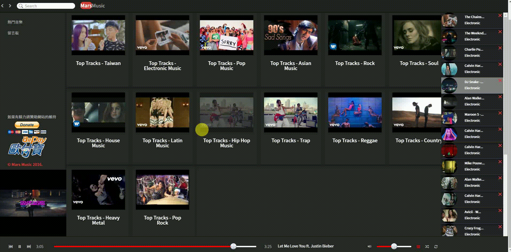

Resume
About me
蔡建台
TSAI,CHIEN-TAI
📩 Mail(信箱)：gary75952@gmail.com
Main skills:
- Asp.net MVC Web API Architecture and Security Planning
- Single Page Application
- CSS, HTML, JavaScript, Angular, Jquery, Typescript, C#6.0
- Cross-browser compatible programming
- Responsive Web Design
- IIS Server
- API Application
- SignalR
- SQL sever & MongoDB & Redis
- Entity framework LINQ Lambda
This project is maintained by MarsCaiWORD
我會利用空閒時間更新我的Blogger方便自己往後有忘記的地方，自己也買了一些書方便查詢．
About me(關於我)
專長為 ASP.net MVC WEB API 架構的規劃及網頁安全及熟練於前端雙向綁定各類frameworke ex.angular vuejs，各類Lib應用，Entity framework ORM，SQL server，Nosql-mongodb redis firebase，實作DevOps，bugtracker應用，擅長於開發前端介接API ，開發過金流系統，遊戲，管理系統，商務網站等等， Main skills如介紹說明，
我會利用空閒時間更新我的Blogger，不定時參與社團活動 ex.Study4.TW twMVC,學習開發新的技術跟實際商務應用架構．
Job Experience(工作經歷)
Obestseed(歐博森科技有限公司)
2016 年 7 月 – Present 地點台灣 台中市
Web Programmer
Angular + TypeScipt WebAPI串接應用 C# 各種lib應用 金流 管理 會員 報表 遊戲 各類網站開發
web application 專案部屬 等等等...
JUT LIVING DEVELOPMENT(忠泰生活開發)
2014 年 10 月 – 2016 年 7 月 地點台灣 台中市
Management Information System
機房架構規劃建設，資安管理，內部系統開發
Works(我的作品) 底下為我私底下應用寫的網站，不包含工作上實際開發功能
1.直播整合平台
用到的有:ASP.NET MVC，WebAPI，Angular，HTML，C#，CSS，RWD，Bootstrap，JQuery
整合各大直播平台
集合各大直播平台，讓你輕鬆觀看不必再切換各個位置，一樣可以觀看留言
1.線上音樂庫 http://marsc.club/
用到的有:ASP.NET MVC，WebAPI，Angular，Typescrit，HTML，C#，CSS，RWD，Bootstrap，JQuery
透過搜尋關鍵字自動可以抓取Youtube音樂存成List播放，點選播放
讓client端可以自己存喜歡的音樂建立自己的音樂庫並且分類，及音樂熱門分類並Order點擊率高的影片
2. Marsc(Instagram API資料瀏覽搜尋)

用到的有: ASP.NET MVC，HTML，C#，CSS，RWD，Bootstrap，JQuery，masonry.js，infinite，scroll.js，Json.net，Linq，Json，Entity framework，ORM
透過Instagram API 抓取Json放置前端瀏覽masonry.js + infinite scroll.js提升網站效能讓網站滾動到底在Ajax get新的一筆資料，利用Jquery選擇圖片大小預覽及或者減少雜亂的回覆訊息方便預覽，也可以登入自己的帳號觀看自己在Instagram上的照片或影片，還可以搜尋相關的tags或是人名觀看別人的照片或影片隨著視窗大小圖片會跟著視窗大小做變化達到RWD的效果．
3.Mr.Kai(電子商務網站)
用到的有:ASP.NET MVC，HTML，C#，CSS，RWD，Bootstrap，JQuery，Linq，Json，Entity framework，ORM.....等等等等等
登入註冊多權限系統:code first建立User及Role多對多的資料庫，FormAuthenticationTicket存放登入者資料包括權限分辨Admin or User後台可以管理商品及使用者權限跟版面的更新，註冊的密碼Hashing + Salt處理
密碼加密參考資料:http://www.c-sharpcorner.com/UploadFile/145c93/save-password-using-salted-hashing/